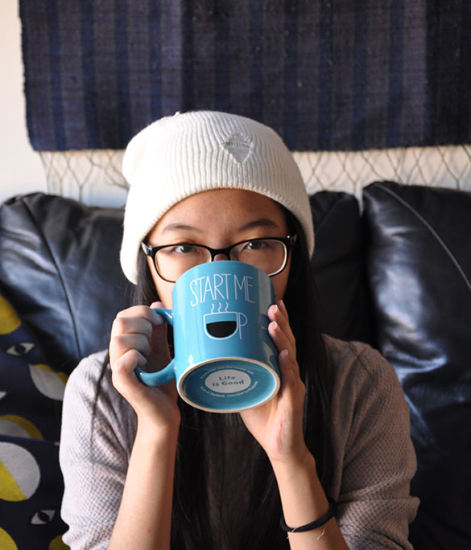

About me
Hello there!
My name is Holly H. I am a 24 year old millennial living in DUMBO, New York. I recently graduated from college with a degree in Food Science and I am currently working as a professional coffee taster. It’s a pretty awesome job I must say. I love having witty banter and alliterations are one of the ways you can catch my attention.
Things I do
You can often find me sitting at local coffee shops reading The Kraus Project by Jonathan Franzen (are you familiar with it?) while typing away furiously on my laptop while sipping on a cup of flat white. If you’re wondering what I am working on, it’d probably be a coffee review or a really slow-going short novel piece on existentialism. Occasionally I’d have the writer’s block and you can find me on VSCO updating my profile with all the pictures of the latest coffee I’ve tried before everyone else finds out about them.
I also only use organic and fair trade products because this world and humanity needs some saving. Did you know that the average American produces as much as 20 tonnes of carbon dioxide-equivalent per year? I ensure that my choices are environmentally sustainable and drinking organic or fair trade coffee is one of them. I am currently considering going vegan but I think everyone else is doing it and I am not sure if it’s a good idea to do so. I need to do more research on it before diving into it because it’d seem like I’m conforming to the trend of going vegan if I don’t know my facts! I also do composting with my own waste at home in an effort to prevent excessive waste.
If you think I’m a hipster after reading all this, let me tell you, I am not one!